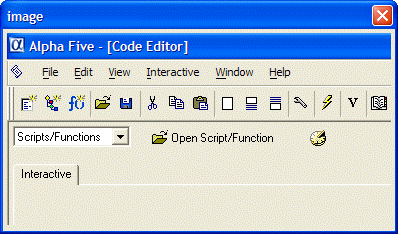

UI_BITMAP_CREATE_FROM_SCREEN()
Syntax
Result_Flag as L = UI_BITMAP_CREATE_FROM_SCREEN( Bitmap_Name as C, X_Coord as N, Y_Coord as N, Width as N, Height as N )
Argument | Description |
Bitmap_Name | The name of the bitmap to create. |
X_Coord | The horizontal coordinate of the upper left corner of the image. |
Y_Coord | The vertical coordinate of the upper left corner of the image. |
Width | The width of the image to capture. |
Height | The height of the image to capture. |
Description
UI_BITMAP_CREATE_FROM_SCREEN() creates a bitmap from the screen. All measurements are in inches.
Limitations
Desktop applications only.
Example
The following example captured a 4 by 2 inch rectangle from the upper left corner of the Code Editor.

ui_bitmap_create_from_screen("test", 0, 0, 4, 2) ui_dlg_box("image", <<%dlg% {image=test} %dlg%) |
See Also